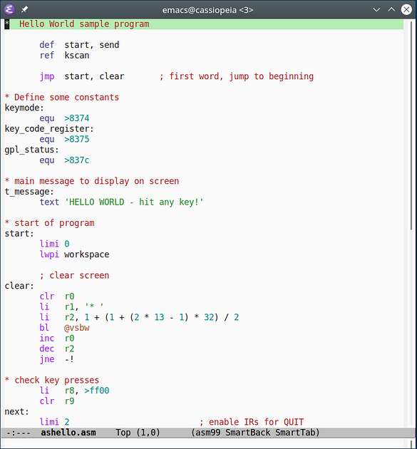
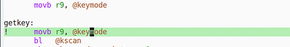
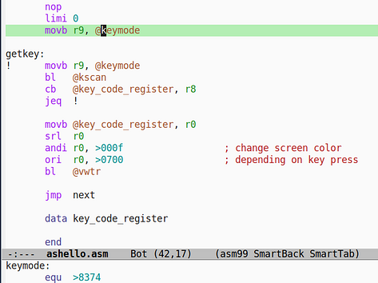
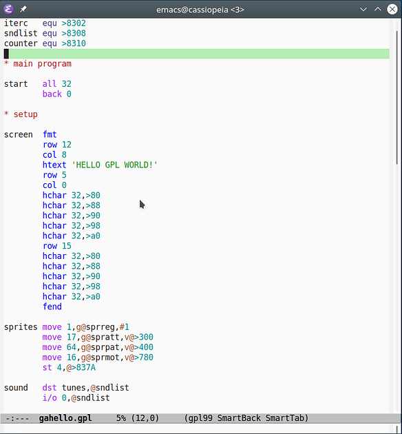
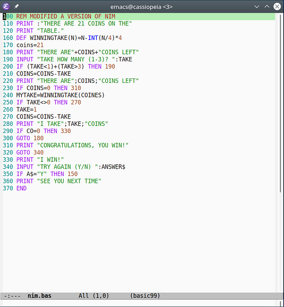
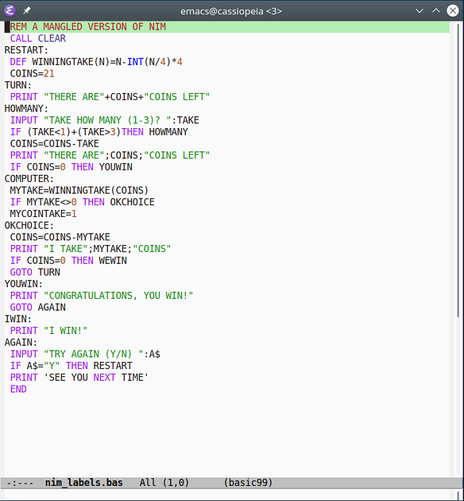

The Emacs library xdt99-mode provides three major modes for editing assembly,
GPL and TI Extended BASIC programs. The assembly mode offers syntax
highlighting and editing assistance, while the BASIC mode is currently limited
to syntax highlighting.
The xdt99 library currently supports all instructions supported by xdt99 version 3.3.
Please note that stock Emacs uses relatively simple technology for analyzing
source code, so the level of functionality that xdt99-mode can offer is
limited. For advanced features such as semantic assistence please use the
IntelliJ IDEA plugin instead.
Assembly support is provided by the asm99-mode major mode. To activate this
mode, press M-x (i.e., press the meta key plus the X key) and enter
asm99-mode at the prompt. Please refer to the installation section on how to
automate this step.
asm99-mode highlights known TMS9900 and related mnemonics as well as various
assembly constructs such as registers and strings. The look and feel of the
highlighting can be customized using the Emacs font-lock faces.

Please note that library, unlike the IDEA plugin, cannot perform syntax checks.
The asm99-goto-def command will jump to the location of the label that the
cursor is currently positioned on.

The asm99-show-def command will show the label definition in the mini buffer.
For easy navigation it is recommended to assign these commands to some shortcut
keys of your choice (see below).

The comment-region command (typically bound to C-c ;) adds the xas99
comment character ; to a range of lines. Conversely, the uncomment-region
command removes a single ; character from each line.
Two minor modes provide support for formatting assistance. The
asm99-smart-tab-mode minor mode will
whenever the user hits the Tab key. You may edit the Emacs variable
tab-stop-list to adjust the tab stop positions to your liking. If
electric-indent-mode mode is active, pressing Return will also indent the
line just entered.
The asm99-smart-backspace-mode minor mode will move the cursor back to the
previous tab stop if there is only whitespace between the cursor and the tab
stop. In other words, the Backspace key acts as the inverse of the Tab key.
Both minor modes are active for asm99-mode by default but may be toggled by
M-x asm99-smart-tab-mode or M-x asm99-smart-backspace-mode, respectively.
GPL support is provided by the gpl99-mode major mode.
The GPL mode gpl99-mode is very similar to the Assembly mode and use the
corresponding functions xga99-goto-def, xga99-show-def.

Because of the large similarities between GPL and assembly, gpl99-mode reuses
the settings for Smart Tab and Smart Backspace.
TI (Extended) BASIC support is provided by the basic99-mode major mode. To
activate this mode, press M-x and enter basic99-mode. Please refer to the
installation section on how to automate this step.
basic99-mode highlights known TI Extended BASIC keywords and various BASIC
constructs such as line numbers and strings. The look and feel of the
highlighting can be customized using the Emacs font-lock faces.

basic99-mode also supports BASIC programs with labels instead of line numbers.

There is currently no additional editor assistance for TI Extended BASIC beyond
the built-in Emacs functionality. It is also not possible to restrict the
basic99-mode to TI BASIC only.
Emacs is configured by creating a .emacs file in your home directory. For
Windows-specific information about the home directory, please refer to the
relevant [GNU FAQ item][5].
Extensions are generally placed into the Emacs site-lisp directory or into
your local .emacs.d directory. When using a non-standard directory, you need
to add its location to your library path in your .emacs config file, e.g.,
(add-to-list 'load-path "~/.emacs.d/")
To activate the xdt99 extension for Emacs, add
(autoload 'asm99-mode "xdt99-mode" "TMS9900 Assembly Mode" t)
(autoload 'gpl99-mode "xdt99-mode" "GPL Mode" t)
(autoload 'basic99-mode "xdt99-mode" "TI Extended BASIC Mode" t)
to your .emacs file.
The xdt99 Emacs library has been tested with Emacs 24, but newer or reasonably older versions of Emacs should also work.
You can associate arbitrary file extensions to the major modes provided by xdt99:
(setq auto-mode-alist
(append '(("\\.a99$" . asm99-mode) ; .a99 -> assembly
("\\.asm$" . asm99-mode) ; .asm -> assembly
("\\.gpl$" . gpl99-mode) ; .gpl -> GPL
("\\.b99$" . basic99-mode) ; .b99 -> TI BASIC
("\\.bas$" . basic99-mode) ; .bas -> TI BASIC
("\\.xb$" . basic99-mode) ; .xb -> TI BASIC
) auto-mode-alist))
Alternatively you can use M-x asm99-mode, M-x gpl99-mode, and
M-x basic99-mode to activate or deactivate each mode for the active buffer.
It is recommended to use electric-indent-mode with smart tabs, but it may not
be enabled by default. To use electric-indent-mode, add
(electric-indent-mode 1)
To permanently disable the smart tab and/or smart backspace minor modes, add one
or both of these lines to your .emacs file:
(asm99-smart-tab-mode 0)
(asm99-smart-backspace-mode 0)
You can always use M-x asm99-smart-tab-mode and M-x
asm99-smart-backspace-mode to activate or deactivate each minor mode for the
active buffer.
For easy navigation you may assign label navigation to some convenient key shortcut:
(global-set-key [f3] 'asm99-goto-def)
(global-set-key [S-f3] 'asm99-show-def)
These lines assign functions asm99-goto-def and asm-show-def to the F3 and
Shift-F3 keys, respectively.